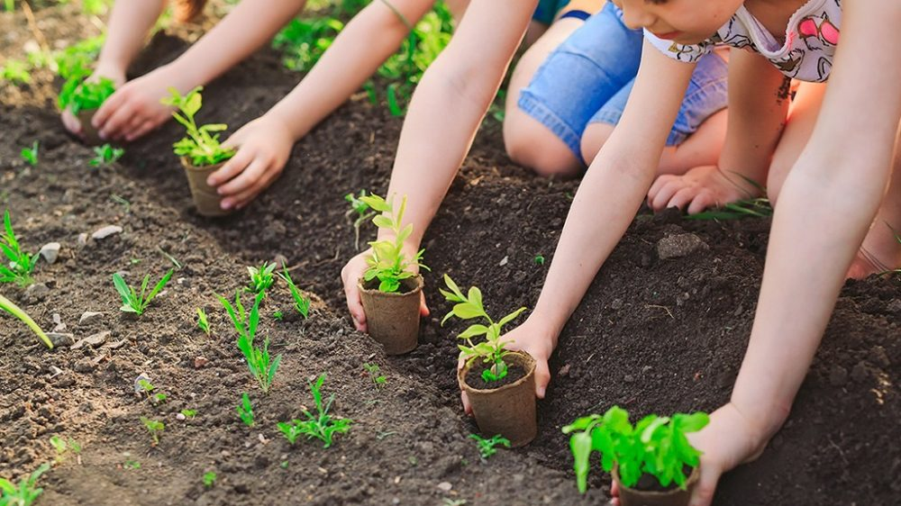
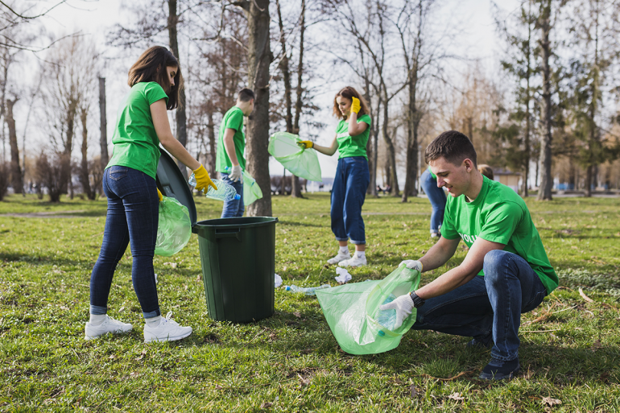
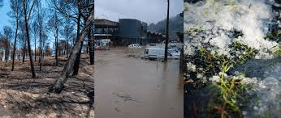
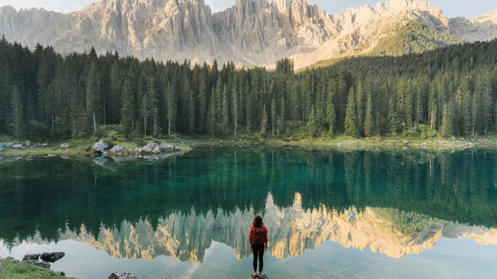

<section id="quienes-somos">
  <div class="container">
    <h1>¿Quiénes Somos?</h1>
    <p>
      En <strong>Ecoloco</strong>, una empresa con sede en Sevilla, creemos firmemente que el cambio comienza con la acción.
      Fundada por <strong>Alberto Sanabria</strong> y <strong>Alberto Hernández</strong>, nuestra misión es transformar el mundo en un lugar más limpio,
      más seguro y más sostenible. Trabajamos día a día para conectar personas apasionadas con oportunidades reales para marcar la diferencia
      en la lucha contra la contaminación y en la gestión de desastres naturales.
    </p>
    

    <p>
      <strong>Nuestro propósito</strong> es doble: ayudar a restablecer el equilibrio ambiental del planeta y garantizar que las comunidades más
      vulnerables reciban el apoyo que necesitan en momentos críticos. Pero no lo hacemos solos. Nuestro modelo se basa en una red de voluntarios
      con habilidades específicas que se unen para aportar soluciones prácticas en situaciones que exigen rapidez, organización y compromiso.
    </p>

    <h2>Nuestro Enfoque</h2>
    <p>
      Lo que nos hace únicos en <strong>Ecoloco</strong> es nuestra capacidad para <strong>conectar a cada voluntario con las tareas y eventos que mejor se adaptan
      a sus habilidades y actitudes</strong>. Sabemos que cada persona tiene algo especial que aportar, y queremos que su tiempo y esfuerzo
      sean utilizados de la manera más efectiva posible.
    </p>
    <p>
      Al registrarte en nuestra plataforma, podrás seleccionar las actitudes y habilidades que mejor describen tus capacidades, como por ejemplo:
    </p>
    <ul>
      <li><strong>Primeros auxilios:</strong> Para aquellos con formación médica que pueden salvar vidas en situaciones críticas.</li>
      <li><strong>Jardinería y cuidado ambiental:</strong> Ideal para quienes disfrutan trabajando con la naturaleza, ayudando a reforestar áreas afectadas o limpiando parques y playas.</li>
      <li><strong>Conducción:</strong> Porque el transporte de suministros o voluntarios es esencial en emergencias y proyectos de limpieza.</li>
      <li><strong>Gestión logística:</strong> Si tienes talento organizando y coordinando recursos, ¡te necesitamos!</li>
      <li><strong>Construcción y reparación:</strong> Para quienes poseen habilidades prácticas que pueden ayudar a reconstruir hogares o infraestructuras después de un desastre.</li>
    </ul>
    

    <p>
      Nuestro sistema inteligente filtra automáticamente los eventos y proyectos disponibles según las actitudes que selecciones. Esto garantiza
      que siempre estarás trabajando en algo que aproveche tus talentos y, al mismo tiempo, maximice el impacto de tus esfuerzos.
    </p>

    <h2>¿Qué Hacemos?</h2>
    <p>
      Desde <strong>limpieza de playas y parques naturales</strong> hasta <strong>rescate y apoyo en desastres naturales</strong> como terremotos, inundaciones o incendios forestales, en
      <strong>Ecoloco</strong> nos dedicamos a enfrentar los desafíos más urgentes del planeta. Creemos que cada acción cuenta, y con tu ayuda, podemos lograr grandes cambios.
    </p>
    <p>Algunos de los proyectos en los que podrías participar incluyen:</p>
    <ul>
      <li>Jornadas de limpieza comunitaria en ríos y costas.</li>
      <li>Apoyo logístico y de rescate en emergencias climáticas.</li>
      <li>Programas educativos para enseñar prácticas sostenibles en comunidades locales.</li>
      <li>Reforestación de áreas dañadas por incendios forestales.</li>
      <li>Organización de donaciones y distribución de recursos en zonas afectadas por desastres.</li>
    </ul>
    
    <h2>Nuestro Compromiso</h2>
    <p>
      Como empresa, nos comprometemos a crear un espacio donde cada voluntario se sienta valorado y motivado. Trabajamos en estrecha colaboración
      con organizaciones ambientales y humanitarias para garantizar que nuestras acciones sean efectivas y sostenibles a largo plazo.
    </p>
    <p>
      Además, en <strong>Ecoloco</strong> creemos que la transparencia es clave. Por eso, ofrecemos a nuestros voluntarios una visión clara del impacto de cada
      proyecto, mostrándoles cómo su tiempo y esfuerzo están transformando vidas y preservando el planeta.
    </p>
    
    <h2>Únete a Nosotros</h2>
    <p>
      En <strong>Ecoloco</strong>, no solo somos una comunidad de voluntarios; somos una familia unida por el deseo de proteger y sanar el mundo. Si compartes nuestra pasión
      y quieres ser parte del cambio, ¡te invitamos a unirte a nosotros!
    </p>
    <p>
      Regístrate hoy, selecciona tus actitudes, y empieza a participar en proyectos que realmente te inspiren. Juntos, podemos construir un futuro más limpio,
      seguro y esperanzador para todos. 🌍✨
    </p>
    
  </div>
</section>
